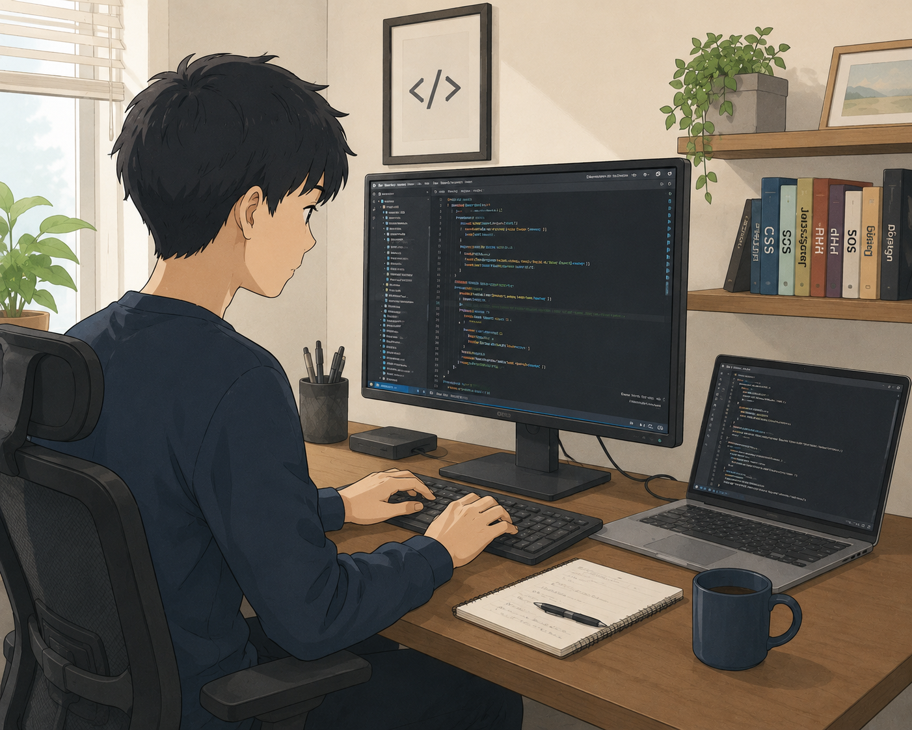

まずVSCは何ができるのか？
メモ帳にはない強みを見ていきましょう！
まずメモ帳にない機能として、
ワークスペースとアクセスのしやすさを挙げます。
メモ帳では作業したいファイルを探さないといけません。
誤ってタブを閉じた場合もう一度呼び出す必要があります。
VSCではワークスペースと呼ばれる使いたいファイルを置けるスペースがあります。
このスペースから使いたいファイルの中身を確認したりタブを閉じてもすぐに呼び出すことができるようになります。
HTMLは編集した後確認が必要です。
ローカル環境でいいのでブラウザで開きレイアウトや動作を確認します。
メモ帳では以下の手順で確認できます。
そして修正箇所があれば再度編集し保存。
ブラウザを更新するか、HTMLを開き直し再度確認します。
メモ帳では、いくつも必要なタブを開かないといけません。
勿論VSCも基本は同じですが、こちらでは、
皆さんは、何か検索するときに予測変換機能を使いませんか？
全文打たなくても、単語の候補が出てくる便利な機能ですよね。
VSCでは同じようによく使われるコードを予測し提示してくれる機能があります。
この機能を使うと候補のコードが出るので時間の短縮になります。
他にも標準機能として複数のタグを一括で出すことも出来ますし、
自動でタグを閉じてくれる機能もあるのでミスを減らしやすいです。
VSCは必要に応じて機能をカスタマイズできます。
僕は編集しやすいように、日本語に翻訳を入れ背景を黒色・テキストカラーを白にしています。
さらに拡張機能という項目から好みの機能をインストールできます。
その中のひとつに
これをインストールすることでVSCから
直接ブラウザを開くことができるようになります。
先ほども触れたVSCからブラウザを開く機能です。
編集した物を保存編集中のVSCから開く
編集画面から開けるので、作業効率があがります。
もしopen in browserをインストール出来なくても、
ブラウザを開く機能はあるので安心してください。
ここまでメモ帳との違いを説明しましたが、VSCが便利なエディターと言うことは伝わったでしょうか？
まだ見られていない項目もチェックしてもらえると、他の違いも見えてくるのでよろしくお願いします！
まずVSCは何ができるのか？
メモ帳にはない強みを
見ていきましょう！
まずメモ帳にない機能として、
ワークスペースと
アクセスのしやすさを挙げます。
メモ帳では作業したいファイルを探さないといけません。
誤ってタブを閉じた場合、
もう一度呼び出す必要があります。
VSCではワークスペースと
呼ばれる使いたいファイルを
管理するスペースがあります。
このスペースから使いたい
ファイルの中身を確認したり、
タブを閉じてもすぐに呼び出すことができます。
HTMLは編集した後確認が
必要です。
ローカル環境でいいので
ブラウザで開きレイアウトや
動作を確認します。
メモ帳では以下の手順で確認できます。
そして修正箇所があれば
再度編集し保存。
ブラウザを更新するか、
HTMLを開き直し再度確認します。
メモ帳では、いくつも必要な
タブを開かないといけません。
勿論VSCも基本は同じですが、ちょっとした違いがあります。
VSCは編集画面から開けるのでタブの管理が少なく済みます。
ちょっとした違いですが、
作業していると煩わしさが減ります。
皆さんは、何か検索するときに予測変換機能を使いませんか？
全文打たなくても、単語の候補が出てくる便利な機能です。
VSCでは同じようによく使われるコードを予測し提示して
くれる機能があります。
この機能を使うと候補のコードが出るので時間の短縮になります。
他にも標準機能として、
複数のタグを一括で出すことも出来ますし、
自動でタグを
閉じてくれる機能もあるので
ミスを減らしやすいです。
対してメモ帳では、必要な
コードを予測出来ません。
その都度入力する必要があるため、限られた期間で制作するには時間が掛かります。
勿論、複数のコードを一括で
出せませんし、タグの閉じ忘れも起きやすいです。
これがメモ帳を使わない理由のひとつです。
VSCは必要に応じて機能を
カスタマイズできます。
僕は編集しやすいように、
日本語に翻訳を入れ背景を
黒色・テキストカラーを
白にしています。
さらに拡張機能という項目から好みの機能をインストール
できます。
その中のひとつに
これをインストールすることでVSCから
直接ブラウザを開くことができるようになります。
先ほども触れたVSCから
ブラウザを開く機能です。
編集した物を保存
編集中のVSCから開く。
編集画面から開けるので、作業効率があがります。
もしopen in browserを
インストール出来なくても、
ブラウザを開く機能はあるので安心してください。
ここまでメモ帳との違いを
説明しましたが、
VSCが
便利なエディターと言うことは伝わったでしょうか？
まだ見られていない項目も
チェックしてもらえると、
他の違いも見えてくるので
よろしくお願いします！